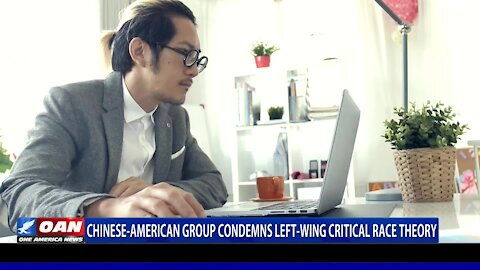

Chinese-American group condemns left-wing critical race theory
OAN Newsroom
One of the nation’s oldest Asian-American advocacy groups is taking a stand against left-wing critical race theory.One America’s Hans Hubbard reports.
Posted On: 2021-03-23T00:00:00

Content Date: 2021-03-23
Download Date: 2021-04-16
Document ID: L0C04A0NJ